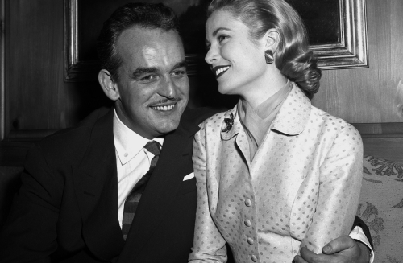
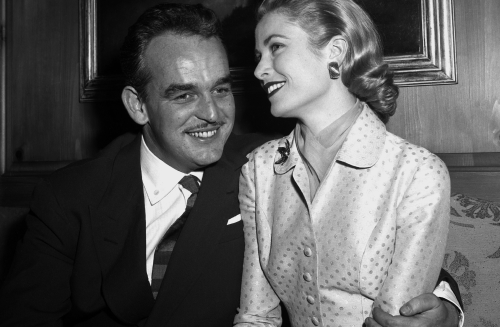

Waarom kiezen voor Le Mirage?
100 jaar verfijnde Belgische gastronomie.
Bekroond met 2 Michelinsterren, geliefd door fijnproevers wereldwijd.
Historische plek bezocht door iconen als Winston
Churchill en Grace Kelly
Bij Le Mirage streven we ernaar de essentie van Belgische gerechten te bewaren, terwijl we ze met moderne technieken heruitvinden. Onze keuken draait om seizoensgebonden ingrediënten, duurzame herkomst, en passie voor perfectie.
“Een culinaire ervaring om nooit te vergeten. Alles ademt perfectie” - Guy LeBrock
“Le Mirage tilt Belgische gastronomie naar een nieuw niveau” - Michelin Gids
“Een parel van de Belgische keuken.” - Barack Obama
Waterzooi van tarbot, bereid met jonge groenten en een vleugje safraan, een moderne kijk op een klassieker
Vier uw speciale momenten in stijl - van jubilea tot intieme diners, wij zorgen voor een onvergetelijke avond.
ReserverenRue de l'Excellence, 47
1000 Brussel, België
+32 2 123 45 67
 
